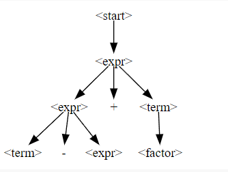
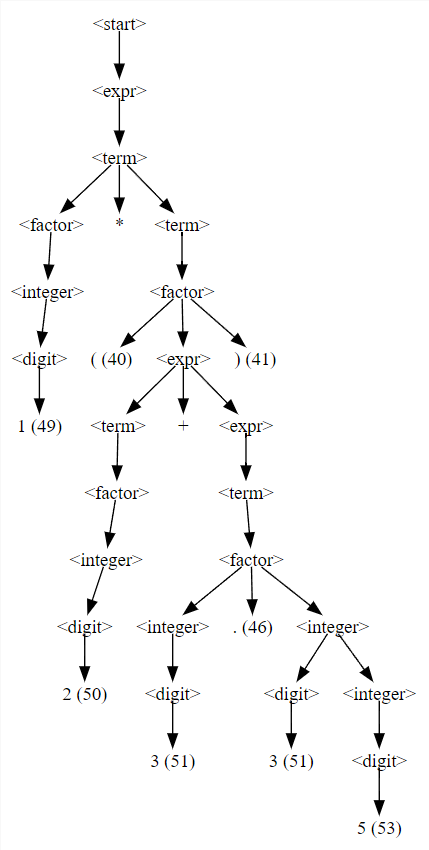

Professional Précis
Author: Alish Chhetri
About the Author

Week 2
SE1: Programming Over Time
Summary
The preface section of the SE book focuses on distinguishing the terms “software engineering”, “programming” and “computer science”. The section proposes that “software engineering” encompasses not just the act of writing code, but all of the tools and processes an organization uses to build and maintain that code over time. It also places an emphasis on holding software engineers to the same level of rigor as other engineering disciplines. The programing over time section briefly goes over those points while introducing three fundamental principles that software organizations should keep in mind when designing, architecting, and writing their code. These principles encompass considerations of time and change, how code will need to adapt over the length of its life; scale and growth, how an organization will need to adapt as it evolves; and trade-offs and costs, how an organization makes decisions, based on the lessons of Time and Change and Scale and Growth.
Reflection
The preface and programming over time sections outline the foundation for the book’s exploration of software engineering with insights from Google’s unique perspective. I believe this will not only give us an understanding of the material but also a look into how the industry, particularly Google, looks at software engineering and what level of rigor they expect.
Use-Case
The knowledge gained from these sections can be applied to any aspect of the Chasten project, as well as to all other programs we write. The emphasis on holding software engineers to the same level of rigor as other engineering disciplines requires us to think beyond the specific use-case of a tool we develop. This ability to apply ourselves rigorously and holistically is crucial in ensuring the success in the field of software engineering.
FB1: Introduction to Software Testing
Summary
The “Introduction to Software Testing” chapter in the Fuzzing book provided valuable insights into the world of software testing. It shows that testing is vital for discovering and rectifying potential issues in the code, contributing to improved software quality and reliability. However, it also highlighted the inherent limitations of testing – it can’t guarantee a completely error-free code. The chapter’s practical example of handling errors, like dividing by zero when using the square root function, illustrated the complexities of software testing, leaving me with a greater understanding of this crucial aspect of software development.
Reflection
The “Introduction to Software Testing” chapter in the Fuzzing book offered valuable insights into testing programs. Testing involves finding bugs in the software, and we can make it more efficient by automating tasks like running tests and checking results. Still, it’s important to realize that testing isn’t foolproof; it can’t ensure that the code is completely free of errors.
Use-Case
The knowledge gained from the “Introduction to Software Testing” chapter can be applied effectively when testing any new software. It shows that testing is vital for discovering and rectifying potential issues in the code, contributing to improved software quality and reliability. In the case of Chasten, we should possibly look into testing different aspects of the program to improve the user experience or the program’s efficiency.
Week 3
SE2: What is Software Engineering?
Summary
Chapter two of Software Engineering at Google elaborates further on the principles of time, scale, and the trade-offs. The book emphasises the idea of developing a program with a focus on maintaining it over decades, not hours. Software developed using this method requires us to be capable of changing dependencies, technology, or product requirements to ensure the longevity of a program. It then introduces a concept called Hyrum’s Law, a phenomenon in software engineering whereby developers come to depend on all observable traits and behaviors of an interface, even if they are not defined in the contract. The book also states the importance of being able to improve as individual engineers to progress as an organization by sharing knowledge amongst peers.
Reflection
The principles outlined in Chapter two of “Software Engineering at Google” underscore the critical importance of long-term thinking in software development. The focus on maintaining software over decades rather than hours encourages a mindset that prioritizes adaptability and flexibility. Hyrum’s Law serves as a reminder of the organic nature of software development, highlighting how developers rely on observed behavior, even if it is not a core feature of the program. There is also an emphasis on individual improvement and knowledge sharing and how personal growth contributes to the progress of the entire organization.
Use-Case
The core take away from this chapter is the emphasis on creating a program for the purpose maintaining it over a larger timescale. The chapter also touches on the fact that improvement to the code base is directly correlated with the improvement of the individual. In our case, Chasten will improve as we personally develop as developers. We got this!!
FB2: Code Coverage
Summary
The Code Coverage chapter in the Fuzzing book provides a foundational understanding of code coverage in fuzz testing, highlighting its significance in discovering software vulnerabilities and offering practical insights into implementing coverage-guided fuzzing techniques. The section also introduces the concepts of white box and black box testing, essential approaches in software quality assurance. White box testing examines internal code, while black box testing assesses functionality without internal knowledge.
Reflection
In this chapter, I gained a deeper understanding of the pivotal role testing plays in software development. The chapter’s emphasis on testing cases reiterated that it’s not just about writing code but ensuring its correctness and resilience under various scenarios. The book delves into a variety of debugging techniques, showcasing their practical applications, which I found particularly valuable.
Use-Case
For our purposes writing effective test cases is critical for delivering and maintaining the chasten project over a longer timescale. We push ensure that testing is taken as seriously as the create and implementation of new code.
Week 4
SE3: How to Work Well on Teams
Summary
The How to Work Well on Teams chapter in the SE book emphasizes the cultural and social aspects of software engineering at Google, highlighting that software development is a collaborative effort. It stresses the importance of adapting behaviors based on key principles like humility, respect, and trust. In the software world, the myth of the solo developer persists, but the reality is that successful software endeavors, regardless of size, rely on well-functioning teams. To endure over time, software organizations must cultivate a healthy culture centered around the team, rather than individual efforts. This approach encourages creativity, risk-taking, and acceptance of occasional failures within a supportive team environment.
Reflection
This chapter expanded upon the idea that teamwork is essential for successful software development, shedding light on the cultural and social aspects of this collaborative process within Google’s software engineering landscape. It underscored the pivotal role of humility, respect, and trust in fostering effective team dynamics. The chapter also effectively dispelled the myth of the solo software developer and emphasized that, regardless of project size, a well-functioning team is the bedrock of software endeavors.
Use-Case
This chapter has provided invaluable insights into optimizing teamwork and enhancing collaboration within the context of software engineering. It serves as a valuable resource for understanding the intricacies of working effectively as a team, particularly in a dynamic and demanding field like software development. If we want to Chasten to succeed, we must learn how to implement these practices and uphold the principles of humility, respect, and trust. We got this!
FB3: Fuzzing: Breaking Things with Random Inputs
Summary
The Fuzzing: Breaking Things with Random Inputs chapter of the Fuzzing Book introduces the idea of fuzzing as a powerful testing technique. Fuzzing involves the systematic generation of random or semi-random inputs to discover vulnerabilities or weaknesses in software applications. This chapter provides a comprehensive overview of fuzzing techniques, including grammar-based fuzzing and mutation-based fuzzing, and delves into the key concepts such as code coverage and crash analysis. It emphasizes the importance of automated fuzzing tools to efficiently discover and exploit software bugs.
Reflection
The chapter’s exploration of various fuzzing techniques, such as grammar-based and mutation-based fuzzing, provides a well-rounded understanding of this testing approach. Additionally, the emphasis on key concepts like code coverage and crash analysis highlights the critical role they play in identifying software bugs. The chapter’s overarching message reinforces the value of automated fuzzing tools in efficiently exposing and addressing these issues, making it a fundamental resource for anyone seeking to enhance software robustness and security.
Use-Case
This chapter has equipped us with invaluable insights into the world of fuzzing, offering a comprehensive understanding of its significance as a testing technique. Just as teamwork is essential in software engineering, fuzzing stands as a powerful and cost-effective tool for improving code coverage and identifying vulnerabilities in our software applications. For our purpose, this testing technique could be employed into the Chasten program to effective test for bugs produced by source code inputs or config files. This technique maybe prove invaluable for Chasten, however I believe that it will be better used during the ladder half of the semester when we start the development of the Astronaught tool.
Week 5
SE4: Knowledge Sharing
Summary
The Knowledge Sharing chapter in the SE book highlights the idea of organizations understanding their own problem domain and being equipped to answer their own questions. This involves having both experts with knowledge and effective mechanisms to disseminate that knowledge. These mechanisms range from simple actions like asking questions and documenting knowledge to more structured approaches like tutorials and classes. Crucially, fostering a culture of learning within the organization is essential, and this necessitates creating an environment where individuals feel psychologically safe to admit when they lack knowledge.
In addition, the chapter underscores the challenge of “Information islands,” which represent knowledge fragmentation occurring in different parts of an organization that do not communicate with one another or utilize shared resources. In such an environment, each group develops its own unique way of approaching tasks and challenges. This phenomenon often leads to several critical issues:
Information Fragmentation: Within these isolated “islands,” there exists an incomplete understanding of the larger organizational context and objectives, resulting in suboptimal decision-making.
Information Duplication: The lack of communication between these groups leads to the duplication of efforts, as each island independently reinvents solutions and processes.
Information Skew: These islands may adopt varying approaches to address the same issues, potentially causing conflicts and inconsistencies when their methodologies intersect.
Reflection
Overall, this chapter underscores the significance of knowledge as a critical asset for software engineering organizations. Fostering a culture of open and honest knowledge sharing, underpinned by psychological safety, is essential for organizational resilience and growth. By starting with simple practices like asking questions and documenting knowledge, and by encouraging teaching and accessibility to resources, organizations can efficiently distribute knowledge and adapt to changing circumstances over time.
Use-Case
This chapter has equipped us with invaluable insights into the world of knowledge sharing. In order to implement these practices and foster psychological safety, we must start by ensuring accessibility to resources and expertise, and incentivize teaching and collaboration. We must also recognize that the approach may evolve as the organization’s needs change. After we learn how to effectivily share our knowledge, we will grow as both developers and programmers.
FB4: Mutation Analysis
Summary
The Mutation Analysis chapter of the Fuzzing Book presents an alternative approach to evaluate the efficiency of a test suite: by introducing mutations, which are simulated defects, into the code and then examining whether the test suite can identify these simulated defects. The underlying concept is that if the test suite cannot detect these artificial mutations, it is likely to overlook actual software bugs as well.
In addition, the chapter emphasizes a limitation of structural coverage measures, which solely measure code execution without verifying the correctness of program outputs. For instance, the presence or absence of assertions in test cases may not affect coverage metrics, even if the test cases fail to validate correct program behavior. Two example test functions, ineffective_test_1 and ineffective_test_2, illustrate this issue:
def ineffective_test_1():
execute_the_program_as_a_whole()
assert True
def ineffective_test_2():
try:
execute_the_program_as_a_whole()
except:
pass
assert TrueThese tests may achieve 100% code coverage but are ineffective at discovering actual bugs.
To address this problem, the chapter hints at the idea of injecting bugs into the program to evaluate test suite effectiveness. However, it acknowledges the challenges in doing so, including the potential bias introduced by developers and the time-consuming nature of manually creating these bugs. Consequently, the chapter highlights the need for more robust approaches to ensure the utility of test suites.
Reflection
The concept of mutation analysis introduced in the Fuzzing Book’s chapter offers a valuable perspective on assessing the effectiveness of test suites. It underscores the inadequacy of relying solely on structural coverage measures, as these may not guarantee the correctness of program outputs. The provided code examples, ineffective_test_1 and ineffective_test_2, vividly illustrate the disparity between achieving high coverage and actually uncovering bugs within the software.
Furthermore, the chapter’s discussion on the challenges of injecting artificial bugs raises important considerations about the practicality and potential bias associated with such an approach. This information highlights the need for a balanced and comprehensive testing strategy that not only targets code coverage but also prioritizes the detection of real-world software defects.
Use-Case
This chapter’s insights into test suite evaluation emphasize the need to complement structural coverage measures with mutation analysis, offering a more robust approach to software testing. By introducing simulated defects and assessing whether the test suite can detect them, we can identify vulnerabilities that structural coverage alone might overlook. It’s crucial to recognize that structural coverage metrics should not be the sole focus; instead, we should prioritize comprehensive testing that validates software correctness and robustness. This may require adjustments to our testing methodologies and practices. By incorporating mutation analysis and a holistic testing approach, we can strengthen our projects, enhance software quality, and grow as proficient developers, ultimately delivering more reliable and user-friendly software products.
Week 6
Executable Examination and Fall Break
Week 7
SE5: Engineering for Equity
Summary
The Engineering for Equity chapter of the Software Engineering book highlights the importance of recognizing and addressing bias in software development. It emphasizes the need for diversity and inclusivity in the industry to ensure that software products are designed for a wide range of users. The chapter discusses how unconscious bias can inadvertently harm underrepresented groups and lead to failures in product development. A case study about Google’s image recognition algorithms failing to consider racial inclusion is presented as an example of such failures. The chapter stresses the need for engineers to focus on understanding diverse user demographics and challenges, as well as the importance of building multicultural capacity in development teams. It also advocates for inclusive design from the beginning of the development process and emphasizes the responsibility of engineers in making equitable systems. The chapter encourages continuous improvement, measurement of equity, and collaboration with diversity and inclusion experts to create more inclusive software products.
Reflection
The chapter serves as a reminder of the ethical and practical imperative of addressing bias and promoting inclusivity in software engineering. It acknowledges that the industry has a long way to go in achieving true inclusivity and diversity. It calls for a shift in mindset, from building for everyone to building with everyone, involving users at every stage of product development. It stresses the need for engineers to understand the impact of their products on a diverse user base and challenges traditional approaches that prioritize speed over equity.
Use-Case
This chapter provides a valuable guide for software engineers and organizations to make inclusivity and diversity central to their product development processes. It encourages engineers to consider all user groups, especially those who may face challenges in using their products, and to collaborate with experts in diversity and inclusion. By following these principles, engineers and organizations can build more equitable and inclusive software that serves a broader range of users, ultimately improving the industry as a whole.
FB5: Mutation-Based Fuzzing
Summary
The Mutation-Based Fuzzing chapter of the Fuzzing Book introduces the idea of mutational-based fuzzing, a technique used in software engineering testing. It involves making small, random modifications to valid inputs to explore a wider range of program behaviors while maintaining their structural integrity. Mutational fuzzing is particularly valuable in testing software that interacts with external data sources, such as file parsers, network protocols, or APIs. This approach helps identify edge cases, uncover hidden software bugs, and ensure the robustness and reliability of programs that process various inputs.
The chapter provides an example of mutation based fuzzing in the following code blocks:
def mutate(s: str) -> str:
"""Return s with a random mutation applied"""
mutators = [
delete_random_character,
insert_random_character,
flip_random_character
]
mutator = random.choice(mutators)
# print(mutator)
return mutator(s)for i in range(10):
print(repr(mutate("A quick brown fox")))example output:
'A qzuick brown fox'
' quick brown fox'
'A quick Brown fox'
'A qMuick brown fox'
'A qu_ick brown fox'
'A quick bXrown fox'
'A quick brown fx'
'A quick!brown fox'
'A! quick brown fox'
'A quick brownfox'The mutate function take a string as an input and applies a random mutation to it by choosing from a set of mutator functions: delete_random_character, insert_random_character, and flip_random_character. It uses the random.choice function to randomly select one of these mutators and then applies it to the input string. The provided loop prints ten randomly mutated versions of the input string, “A quick brown fox.” The example output shows us how the input text can be modified, however you can still clearly tell what the original input was, thus demonstrating the mutation of existing content and not generation of new content.
Reflection
The Mutation-Based Fuzzing chapter of the Fuzzing Book introduces mutational-based fuzzing as a practical technique for software engineering testing. It emphasizes the significance of maintaining structural validity in input modifications, allowing for more precise exploration of a program’s behaviors. The provided code example illustrates the process of mutating existing content, highlighting the approach’s ability to generate subtle variations while retaining the original context. This chapter showcases the value of mutational fuzzing in enhancing software robustness, particularly in scenarios involving external data sources, and serves as a reminder of the importance of nuanced testing methods that go beyond basic input validation.
Use-Case
Developers can apply the principles outlined in this chapter to systematically mutate valid inputs, allowing for the exploration of program behaviors beyond mere input processing. This approach is particularly valuable when testing software that interacts with external data sources such as file parsers which fits our needs. By implementing mutational fuzzing, we can identify edge cases, uncover hidden software defects, and ensure comprehensive software quality and reliability, ultimately enhancing the overall testing and quality assurance processes in software development.
Week 8
SE6: How to Lead a Team
Summary
The chapter How to Lead a Team in “Software Engineering at Google” delves into the distinctive nature of team leadership compared to individual technical roles. It emphasizes that while exceptional software engineers might not automatically excel as managers, successful organizations foster diverse career paths for both individual contributors and managers. Google’s perspective underscores that though technical proficiency is valuable, a manager’s core competencies lie in their social skills. Effective managers primarily enable their teams by emphasizing leadership, directing them towards the right goals, and shielding them from external disruptions. This approach is underscored by the foundational principles of humility, trust, and respect. The chapter’s essence lies in the transformation from traditional “management” to a focus on leadership, influence, and service to the team, emphasizing delegation rather than performing tasks independently. Ultimately, it stresses the importance of guiding the team’s focus, direction, and momentum.
Reflection
The chapter stresses a significant change in leadership methods, moving from traditional authoritative approaches to a more supportive and encouraging style. It emphasizes the importance of prioritizing the team’s well-being and productivity over mere task completion. This transformation involves creating an environment where individuals feel guided and respected rather than strictly managed. Rooted in values such as humility, trust, and respect, this evolved leadership model fosters a culture of learning, trust, and collaboration. It advises leaders to understand that success is not just about completing tasks but about empowering each team member to perform at their best. This new leadership style focuses on guiding, supporting, and enabling the team to achieve its objectives, fostering a positive, growth-oriented atmosphere that enhances productivity and collective success.
Use-Case
Emphasizing respect and humility is crucial for effective collaboration and knowledge exchange. Even without explicit ‘managers,’ embracing these principles positively influences work dynamics. Personal experiences affirm the impact of positive pressure, encouraging the team to maintain trust, delegate tasks effectively, and foster an environment that accommodates mistakes while ensuring fair task distribution based on individual abilities.
FB6: Fuzzing with Grammars
Summary
The chapter Fuzzing with Grammars delves into the powerful use of grammars to generate syntactically valid inputs. It discusses how grammars can create structured, randomized string combinations, applicable for various functions and processes. By defining a set of rules, grammars help formalize the structuring of inputs, similar to how natural language follows a grammar that enables effective communication among humans. The chapter introduces the concept of Grammars, demonstrating their application in generating controlled yet complex string inputs that can be used for functions.
Additionally, it highlights the versatility of grammars, indicating their application not only in formal languages like computer inputs but also in producing natural language. The chapter showcases an example of using a grammar to generate titles for a book.
TITLE_GRAMMAR: Grammar = {
"<start>": ["<title>"],
"<title>": ["<topic>: <subtopic>"],
"<topic>": ["Generating Software Tests", "<fuzzing-prefix>Fuzzing", "The Fuzzing Book"],
"<fuzzing-prefix>": ["", "The Art of ", "The Joy of "],
"<subtopic>": ["<subtopic-main>",
"<subtopic-prefix><subtopic-main>",
"<subtopic-main><subtopic-suffix>"],
"<subtopic-main>": ["Breaking Software",
"Generating Software Tests",
"Principles, Techniques and Tools"],
"<subtopic-prefix>": ["", "Tools and Techniques for "],
"<subtopic-suffix>": [" for <reader-property> and <reader-property>",
" for <software-property> and <software-property>"],
"<reader-property>": ["Fun", "Profit"],
"<software-property>": ["Robustness", "Reliability", "Security"],
}
from typing import Set
titles: Set[str] = set()
while len(titles) < 10:
titles.add(simple_grammar_fuzzer(
grammar=TITLE_GRAMMAR, max_nonterminals=10))
titles
{'Fuzzing: Generating Software Tests',
'Fuzzing: Principles, Techniques and Tools',
'Generating Software Tests: Breaking Software',
'Generating Software Tests: Breaking Software for Robustness and Robustness',
'Generating Software Tests: Principles, Techniques and Tools',
'Generating Software Tests: Principles, Techniques and Tools for Profit and Fun',
'Generating Software Tests: Tools and Techniques for Principles, Techniques and Tools',
'The Fuzzing Book: Breaking Software',
'The Fuzzing Book: Generating Software Tests for Profit and Profit',
'The Fuzzing Book: Generating Software Tests for Robustness and Robustness'}The Python code block provided presents a natural language grammar utilized to generate book titles, as explained. The code creates a grammar structure TITLE_GRAMMAR comprising different components (e.g., “start”, “title”, “topic”) and their respective sets of options. Utilizing this grammar, the code generates 10 unique book titles by applying the simple_grammar_fuzzer() function, populating the titles set with the resulting strings. The while loop ensures the generation of titles until the set contains 10 unique elements. The output showcases the 10 distinct book title options created from this grammar, each exhibiting various combinations as defined in the grammar rules.
Reflection and Use-Case
The chapter’s exploration of using grammars to generate structured and varied string inputs provides a powerful method applicable to testing, simulation, and data generation. This strategy holds immense potential for Chasten, particularly in software testing, as it allows for the automated creation of diverse test cases without manual input, thereby enhancing test coverage across various software functionalities. The adaptability of grammars, exemplified by producing natural language outputs, presents possibilities for auto-generating user interfaces, content, or communication templates. Incorporating grammars into Chasten’s testing strategies can optimize data generation, streamline testing tasks, and enable more efficient development and testing phases, significantly revolutionizing how the project handles mutation-based fuzzing, especially in constructing XPath expressions.
Week 9
SE7: Leading at Scale
Summary
The Leading at Scale chapter discusses the evolution of leadership from an individual contributor to a team leader and beyond. It explores the natural progression of engineers into leadership roles managing related teams, emphasizing that with increased responsibility comes a shift to higher-level, abstract problem-solving. This chapter highlights the “three Always of leadership”: Always Be Deciding, which involves making high-level strategic decisions; Always Be Leaving, encouraging leaders to enable self-sufficiency within their teams to avoid becoming a single point of failure (SPOF); and Always Be Scaling, focusing on protecting personal resources while developing self-sufficient teams. The chapter emphasizes that success as a leader involves building self-driving teams, strong leaders, healthy processes, and a culture of persistence over time.
Reflection
The chapter insightfully portrays the journey of an engineer evolving into a leader and the inherent challenges of transitioning from technical expertise to higher-level decision-making and team management. It adeptly emphasizes the necessity for leaders to delegate, empower self-sufficiency within their teams, and protect their own resources while ensuring team growth. The three principles - Deciding, Leaving, and Scaling - offer a practical framework for effective leadership, illustrating the need to navigate from technical proficiency to organizational orchestration. The concept of not being indispensable but rather fostering a self-sufficient organization resonates profoundly, underlining the importance of building a sustainable team structure. Additionally, the cycle of success elucidates the iterative nature of problem-solving, the emergence of new challenges, and the continuous cycle of learning and growth in leadership roles.
Use-Case
While our team currently operates without explicit leadership roles, this doesn’t deter us from maximizing productivity and efficiency. We believe in a leadership approach that allows each team member to adopt strategies without the constraints of micromanagement, fostering progress. Embracing failure as a learning component remains crucial, even within smaller projects and organizations. Despite the absence of defined leaders beyond the instructor and student technical leads, we contemplate the potential introduction of more formal roles, aiming to enhance alignment and direction. Nevertheless, it’s pivotal that each team member is afforded the opportunity to lead at different junctures, recognizing that our team isn’t solely a software engineering group, but a class where the development of leadership skills is an integral part of our collective growth.
FB7: Efficient Grammar Fuzzing
Summary
In this chapter, the transformation from a string-based to a tree-based algorithm marks a significant advancement, offering enhanced speed and control in generating fuzz inputs. Derivation trees, adopted in grammar-based fuzzing, provide a structured representation enabling more efficient and controlled string generation by navigating expansions systematically.
class GrammarFuzzer(GrammarFuzzer):
def expand_node_min_cost(self, node: DerivationTree) -> DerivationTree:
if self.log:
print("Expanding", all_terminals(node), "at minimum cost")
return self.expand_node_by_cost(node, min)class GrammarFuzzer(GrammarFuzzer):
def expand_node(self, node: DerivationTree) -> DerivationTree:
return self.expand_node_min_cost(node)
f = GrammarFuzzer(EXPR_GRAMMAR, log=True)
display_tree(derivation_tree)
Within the code snippets, the extension of the GrammarFuzzer class introduces methods like expand_node_min_cost, streamlining the expansion process by aiming for minimum cost, while the expand_node method acts as a straightforward interface, enhancing the derivation tree expansion within fuzz input generation. This approach exemplifies the pivotal shift from traditional string-based algorithms to tree-based methodologies, fundamentally improving control and efficiency in the fuzzing process.
Reflection and Use-Case
The chapter delves into refining a string-based algorithm into a tree-based approach, significantly advancing grammar-based fuzzing. This shift from traditional string-based to tree-based derivation introduces derivation trees, allowing for more controlled and efficient string generation. The structured expansion of symbols in the derivation tree mitigates issues like infinite expansions in traditional methods. Integrating this approach into chasten, particularly within XPath expressions, can automate the generation of diverse yet structured test inputs. This implementation could revolutionize how mutation-based fuzzing is applied, improving test coverage and enabling robust test scenarios, enhancing the software’s testing capabilities.
Week 10
SE8: Style Guides and Rules
Summary
The Style Guides and Rules chapter of the SE at Google book explores the crucial role of rules and guidance within engineering organizations, with Google as a prime example. It emphasizes the tailored approach in Google’s style guides for various programming languages, shaped by language traits and evolving industry standards. One case study illustrates the adaptive nature of rules, such as allowing std::unique_ptr in C++11 after its alignment with style guidance became evident. Additionally, the narrative underlines the necessity of periodically changing rules, demonstrated by Google’s shift in Python naming conventions. This transition from CamelCase to snake_case highlights the need for adaptability to maintain effective guidelines. Overall, the chapter provides insight into the dynamic nature of rules and guidance, essential for sustaining an efficient codebase within a dynamic engineering landscape.
Reflection
The chapter offers a deep insight into the significance of rules and guidelines in a large-scale engineering environment. It showcases how stringent rules and adaptable guidance serve as the backbone of coding practices, aligning with organizational values and goals. The dynamic nature of different programming languages necessitates tailored guidelines, illustrating the importance of rules in maintaining a manageable codebase. The focus on developing rules that serve specific goals rather than creating exhaustive rulebooks provides clarity and prevents unnecessary overhead. Moreover, it underscores the trade-off between consistency and flexibility, showcasing the delicate balance in ensuring code quality while not overburdening engineers with an excessive number of rules. Ultimately, the chapter emphasizes the critical role of rules in shaping a sustainable engineering environment that’s resilient to scale and time, enabling effective codebase management while supporting a common development pattern.
Use-Case
Implementing guidelines to ensure adaptability and scalability is essential to growth of chasten. By continuously evaluating data, we can adjust rules to suit changing needs. It’s crucial to avoid making every practice a rigid rule, maintaining flexibility. Consistency in adhering to these guidelines is paramount for a cohesive approach. Automating enforcement wherever feasible streamlines the process and ensures adherence to the established practices. Integrating these principles into our operations allows for a balanced and adaptable approach, ensuring sustained efficiency and growth within our system.
FB8: Parsing Inputs
Summary
The Parsing Inputs chapter within the FB book delves into the practical application of grammars, not just for generating strings but also for parsing, deconstructing strings into derivation trees, and subsequently recombining these components for fuzzing—generating new, valid inputs. This chapter introduces Parsing Expression Grammar (PEG) parsers and Earley parsers, emphasizing the differences in their parsing methodologies. PEGs prioritize ordered choice, whereas Earley parsers exhibit adaptability across various grammar structures. It underscores the significance of grammars in parsing, emphasizing the creation of derivation trees, nuances in constructing PEGs, and the flexibility of Earley parsers in handling diverse context-free grammars. Overall, this chapter highlights the fundamental role of grammars in both parsing and generating strings through distinct parsing techniques, fostering a deeper understanding of their practical applications.
class PEGParser(Parser):
def parse_prefix(self, text):
cursor, tree = self.unify_key(self.start_symbol(), text, 0)
return cursor, [tree]mystring = "1 * (2 + 3.35)"
for tree in peg.parse(mystring):
assert tree_to_string(tree) == mystring
display(display_tree(tree))
The code snippet uses the PEGParser to parse a given string, verifying the precision of the resulting tree structure through an assertion test. Additionally, it presents a visual representation, which is displayed alongside the code snippet.
Reflection and Use-Case
The Parsing Inputs chapter introduces PEG and Earley parsers, highlighting their distinct parsing methods. Integrating these techniques into Chasten could greatly improve its pattern recognition within Python AST. By employing these methods, Chasten could create more accurate linting rules, offering precise pattern identification without relying on complex AST frameworks or limited regular expressions, thereby enhancing its code evaluation.
Week 11
Executable Examination
Week 12
SE9: Code Review
Summary
The Code Review chapter in the Software Engineering at Google book delves into Google’s approach to code evaluation and its overarching significance. Code review stands as a crucial phase in ensuring uniformity and excellence within a software engineering venture, warranting earnest consideration. At Google, this process is divided into three fundamental aspects: ensuring correctness and comprehension of the code, verifying its appropriateness for the project, and evaluating its readability and adherence to defined style rules. Split into steps, the process starts with the author summarizing and explaining the changes, followed by another person’s review and feedback. Iterations continue until the code aligns with the standards and requirements. Professionalism and clear communication are pivotal to minimize misinterpretation and enhance efficiency, despite the inherent slowdown in the change implementation process. Despite this, Google finds that the benefits of rigorous code review significantly outweigh the drawbacks, ensuring consistency, quality, and a shared understanding among team members. Upon multiple approvals using LGTM (“Looks good to me”), the changes are then implemented.
Reflection and Use-Case
The chapter underscores efficient code review methods, shedding light on challenges encountered in our Chasten project, notably the involvement of 3 to 5 reviewers per change, often resulting in superficial assessments. Addressing this issue involves recognizing that a shift towards a single reviewer system emerges as a potential solution, promising improved accountability and depth in assessments. The need for detailed change descriptions resonates with our team’s lack of clear commit messages and timing. Increasing commit frequency would offer a clearer development trail for reviewers. Implementing these changes could significantly enhance our code review process.
FB9: Reducing Failure-Inducing Inputs
Summary
The Reducing Failure-Inducing Inputs chapter in the fuzzing book delves into Delta Debugging as a valuable technique for pinpointing code faults. It presents two key approaches: one employing a binary search algorithm to iteratively dissect string inputs, isolating the minimal failing part, while the other utilizes grammar-based reduction, intelligently splitting inputs using defined tokens. This method proves effective across various input types, allowing for precise identification of code failure origins. The chapter emphasizes the importance of minimizing failure-inducing inputs for effective testing and debugging, highlighting delta debugging as a straightforward and reliable algorithm for simplifying test cases. Additionally, it advocates for the use of grammar-based reduction when dealing with intricate syntactic inputs due to its quicker processing speed and superior outcomes in achieving minimized inputs for testing purposes.
Reflection and Use-Case
Reflection on the insights from the “Reducing Failure-Inducing Inputs” chapter prompts the Chasten and Cellveyor teams to recognize the relevance of Delta Debugging principles in addressing software issues efficiently. Although the project’s scale may not entirely align with exhaustive debugging, understanding this methodology remains crucial. Embracing delta debugging concepts equips teams to rapidly pinpoint and address errors, notably streamlining the identification of fuzzing inputs—a significant time-saving aspect in testing. However, its effectiveness hinges on input data nature, necessitating a balanced approach between simplicity and efficiency in debugging strategies. Acknowledging these intricacies, the chapter encourages exploring alternative reduction techniques like Grammar-Based Input Reduction.
In the context of Chasten’s Python code analysis using XPATH, leveraging Delta Debugging holds promise to automate error identification and isolation, augmenting the software’s fault detection capabilities. Additionally, considering the limitations of Delta Debugging, exploring Grammar-Based Input Reduction for syntactic constraints in Python code could offer an alternative, more efficient reduction strategy. These strategies, derived from the chapter’s insights, provide actionable steps to enhance error identification and streamline debugging processes within the Chasten project.
Week 13
SE10: Documentation
Summary
The Documentation chapter in the Software Engineering at Google book acknowledged that while there have been advancements in documentation quality, it still doesn’t hold the same precedence as testing within the engineering culture. Unlike tests that can be structured, automated, and follow prescribed patterns, documents lack such uniformity due to their subjective nature and asynchronous evaluation by readers. However, there’s a growing acknowledgment of documentation’s significance, with evolving processes for document development. Despite being superior to many engineering environments, Google recognizes the need for a collective understanding that engineers themselves are both the problem and the solution regarding documentation quality. Embracing documentation as an essential part of their responsibilities can significantly save time and effort in the long run, especially for code expected to endure. The key takeaways emphasize the vital importance of documentation, its integration into the developer workflow, the need for focused documents, and the importance of writing for the intended audience rather than the author.
Reflection and Use-Case
This chapter changed how I see documentation, urging us to treat it like code in our development work. It talks about setting rules, controlling documentation, assigning responsibilities, and checking how effective it is. There are different types of documents, like reference guides and design docs, which help us work together better. It shows how important good documentation is, saying it’s just as vital as writing code. For our Chasten project, this means using code-like practices for documentation, assigning ownership, improving how we track and review it, focusing on making it easy for our audience, and using different types of docs to improve our work.
DB1: Introduction to Debugging
Summary
The Introduction to Debugging chapter of the Debugging Book presents foundational principles for effective debugging practices. It emphasizes moving away from reactive approaches—like scattered print statements and arbitrary code alterations—to more systematic and focused methods. Understanding the essence of defects, faults, and failures in programming, the chapter introduces the importance of tracing back fault propagation systematically to identify underlying defects. Through the application of the scientific method, developers are encouraged to formulate and test hypotheses rigorously, leveraging repeated experiments and observations. Zeller advocates for a methodical approach: comprehensively diagnosing issues before fixing defects, maintaining detailed logs of observations and hypotheses, and even employing “rubber ducking”—explaining problems aloud—to unravel intricate coding issues. Ultimately, the chapter stresses the significance of a systematic debugging process grounded in clear observations, methodical analysis, and deliberate experimentation for effective defect resolution.
Reflection and Use-Case
The debugging chapter serves as a comprehensive guide, emphasizing the significance of a structured approach to address coding issues. While some content felt familiar, the focus on hypothesis creation and meticulous documentation stands out as pivotal. Integrating these concepts into our debugging process by encouraging hypothesis-driven analysis and meticulous documentation will significantly enhance our team’s debugging efficiency. Applying the cause-and-effect chain principle in writing test cases and embracing the systematic approach of the scientific method in diagnosing errors will amplify our ability to debug programs effectively. This chapter underscores the importance of methodical debugging, advocating for a hypothesis-based, systematic approach, providing a robust framework for debugging practices and fostering a more reliable codebase.
Week 14
SE11: Testing Overview
Summary
The Testing Overview chapter in the Software Engineering at Google book delves into Google’s transformative approach to automated testing, unveiling their efficient validation of an extensive codebase. This strategy has significantly bolstered confidence in their code, streamlining development by leveraging automated tests, acknowledging the challenge of manually testing vast programs. Google emphasizes test size and scope, advocating for narrower, more targeted tests to cover the majority of their codebase effectively. Their mantra, “If you liked it, you should put a test on it,” underscores the focus on testing features prone to breakage for enhanced coverage. While stressing the importance of test coverage, Google also emphasizes the necessity of quality tests, cautioning against solely coverage-centric testing that may miss essential scenarios.
Over 15 years, this practice has not only facilitated faster development with larger teams but also accommodated rapid technological advancements. The chapter serves as a comprehensive guide, shedding light on Google’s testing philosophy, paving the way for in-depth discussions on unit tests, test doubles, and the complexities of testing larger systems. Understanding these strategies’ ‘what, why, and how’ is crucial to grasp Google’s robust testing approach, emphasizing the foundational role of automated testing in enabling software adaptation. The key takeaways stress scalable automation, balanced test suites, and the cultural shift toward comprehensive testing practices within organizations.
Reflection and Use-Case
The insights from this chapter underscore the pivotal role of testing as a strategic cornerstone rather than solely a technical process in software development. It emphasizes the need to integrate robust testing practices to navigate the complexities of development, fostering agility and innovation. These ideas resonate strongly with our Chasten project, where we’ve implemented various tests. However, the crucial takeaway is not just increasing test coverage but crafting high-quality tests capable of handling diverse inputs, focusing on pivotal functions and leveraging fuzzing tests. Integrating these strategies can elevate our testing approach, allowing the project to scale beyond it’s current state into the future.
DB2: Tracing Executions
Summary
The tracing executions chapter from the debugging book offers a comprehensive exploration of invaluable techniques essential for efficient debugging. It provides insightful methods for program tracing and event flagging, minimizing the reliance on excessive print statements. Through the utilization of sys.settrace() in conjunction with the StackInspector class, developers can seamlessly trace program events, facilitating a detailed understanding of code execution. This approach generates exhaustive logs, capturing executed code lines, variable scopes, and their respective values, offering an intricate overview of program flow. Furthermore, the chapter delves into tracking variable changes, empowering developers to pinpoint unintended modifications or undesired alterations in values, thereby enhancing precision in the debugging process. In interpreted languages like Python, the simplicity of accessing program states during execution using sys.settrace() streamlines state inspection and execution interruption. This method, enabling tracing at every code line, simplifies debugging by generating comprehensive traces for detailed post-analysis, eliminating the need for selective interactive debugging and fostering a more nuanced understanding of code behavior.
Reflection and Use-Case
Reflecting on the tracing and debugging mechanisms outlined in the chapter, it’s evident that incorporating tracing methods into Chasten’s test suite could substantially improve its debugging capabilities. Tracing within programs offers a detailed overview of variable interactions and execution paths, facilitating efficient debugging. However, deploying tracers for every output might be time-intensive, indicating the need to implement tracers selectively, particularly when errors occur, to optimize efficiency. Lessons learned from interpreted and compiled languages highlight the utility of debugging hooks, breakpoints, watchpoints, and code instrumentation in accessing program states and controlling execution. Moving forward, embracing tracing methods tailored to specific test scenarios within Chasten’s suite promises to enhance the debugging process significantly.
Week 15
SE12: Unit Testing
Summary
The chapter on unit testing in the Software Engineering at Google book emphasizes the critical role of well-structured and robust unit tests in software development. It stresses the need for tests that maintain stability over time, cautioning against brittle tests that easily break due to minor changes in the code. By advocating for tests focusing on public APIs, testing state changes rather than interactions, and prioritizing clarity and conciseness, the chapter outlines best practices for effective unit testing. It underscores the importance of tests that verify program outputs and system states, ensuring functionality remains intact amid code changes. Additionally, it promotes the practice of writing descriptive and meaningful tests, avoiding code repetition, and emphasizing comprehensive test coverage over duplicative tests. The chapter serves as a guide for engineers, emphasizing the significance of resilient and clear unit tests to ensure software reliability and facilitate smoother development processes.
Reflection and Use-Case
This chapter offered detailed insights into test writing, sometimes feeling overwhelming due to the specific differences in test types. I hope to better understand and apply these principles, especially in future projects related to scientific computing. Moving ahead, I’ll reconsider our test writing, aiming to break down large test cases and avoid repetition. We should focus on concise, impactful tests while avoiding slowing down our testing suite with overly large integration tests. Integrating the “Don’t Repeat Yourself” concept will streamline our testing in Chasten, ensuring clear and efficient test cases without unnecessary duplication.
DB3: Asserting Expectations
Summary
The Asserting Expectations chapter from the debugging book sheds light on the pivotal role of assertions in verifying and ensuring a function’s expected behavior. Assertions serve as robust debugging tools, assessing specific conditions and variables to check for invariants and verify correctness during program execution. By incorporating assertions within functions or code, developers can seamlessly verify inputs, outputs, and data structures, facilitating efficient debugging without relying solely on manual inspection. Additionally, assertions play a critical role in tracking memory usage, enabling the monitoring and optimization of memory allocation for enhanced program efficiency. Lessons learned emphasize the potency of assertions in examining preconditions, postconditions, and data invariants, empowering the automation of critical debugging tasks while upholding the integrity of the runtime system. The chapter advocates for a strategic deployment of assertions without impacting the program’s correct operation, emphasizing their role in early error detection, defect localization, and effective debugging guidance.
Reflection and Use-Case
The inclusion of assertions within our team’s coding practices can significantly enhance our debugging capabilities. Assertions serve as simple yet powerful tools to validate program behavior, offering a quick way to ensure that functions receive correct inputs and deliver expected outputs. While they shouldn’t replace comprehensive test cases, judicious use of assertions within our codebase, especially in tools like Chasten and Cellveyor handling user inputs, can streamline error detection and improve program integrity. Embedding assertions strategically can establish a standard for program arguments, although unexpected failures on the user side could potentially lead to a suboptimal user experience if not handled carefully.
In light of these insights, it’s essential to consider where assertions can be logically embedded within Chasten and Cellveyor. However, it’s crucial to exercise caution and balance when implementing assertions. While they are invaluable for enhancing early error detection and defect localization, over-reliance or misuse of assertions might inadvertently impact user experience if failures occur on the user’s end. Keeping this balance in mind, we should integrate assertions thoughtfully into our codebase, maintaining a focus on improving debugging efficiency without compromising user interaction and experience.
Week 16
DB4: Statistical Debugging
Summary
The Statistical Debugging chapter from the debugging book introduces the concept of statistical debugging, a technique aimed at identifying lines of code most likely to cause program failures. This method analyzes failing and passing runs, correlating them with specific code lines to pinpoint potential bugs. Employing a collector function, it tracks lines executed during program runs with varying inputs. Statistical debugging then ranks code lines by their association with failing runs, highlighting areas where failures predominantly occur. By determining the frequency of execution of different lines in failing versus passing runs, this approach identifies suspicious code segments, aiding in localizing potential bugs. Correlations between execution events and outcomes (pass/fail) offer crucial hints for debugging, particularly when events occurring mainly during failing runs are highlighted and ranked to guide the search. These insights provide significant clues, indicating whether the execution of specific code locations correlates with program failure, enhancing the debugging process.
Reflection and Use-Case
The lessons learned underscore the significance of identifying correlations between execution events and outcomes, especially in isolating critical instances leading to failures. However, I’m unsure about the seamless integration of these methods due to the complexity of our project’s structure. Nevertheless, I am committed to exploring these techniques further to uncover potential ways to implementation them within our project. I believe that investigating and attempting to incorporate these techniques could significantly enhance our debugging methodology and contribute to bolstering the reliability of our programs.